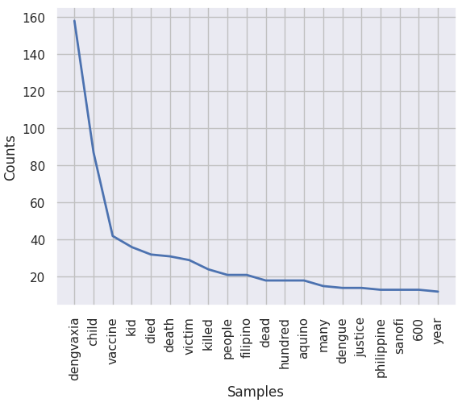
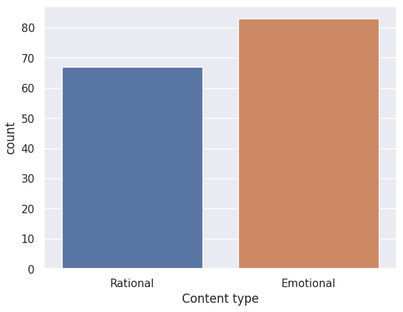
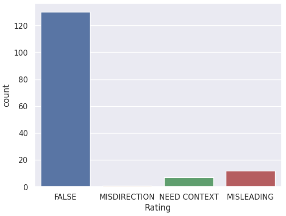
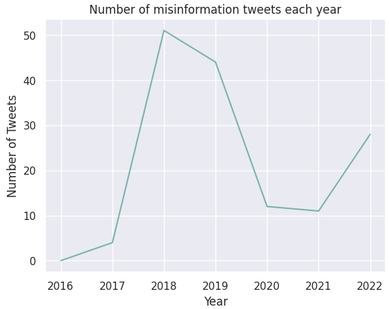
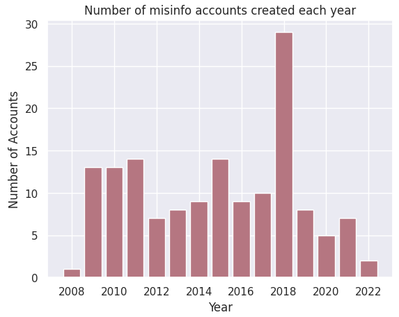
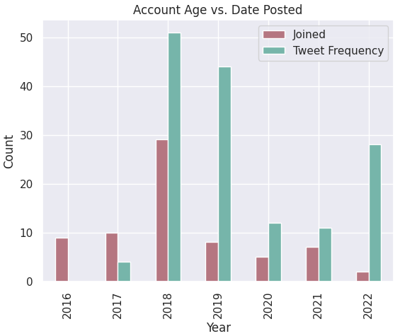

One of the most important factors to look at when analyzing misinformation tweets is the
most frequent words and terminologies people mention in these data. Identifying these vocabulary allows us
to better understand the main drivers why people publish misinformation.
import nltk
from nltk import word_tokenize
from nltk.probability import FreqDist
from matplotlib import pyplot as plt
# Display the total number of words present
token_temp = tweets_lemmatized.copy()
words = " ".join(token_temp)
print(f"The total number of words in the text is {len(words)}")
# Find the frequency of words
fdist = FreqDist(word_tokenize(words))
fdict = dict(fdist)
set_words, count_words = zip(*fdict.items())
set_words, count_words = list(set_words), list(count_words)
# Creating a dataframe for word frequency
df_freq = pd.DataFrame(zip(set_words, count_words), columns=["words", "count"])
df_freq.sort_values("count", ascending=False, inplace=True)
df_freq.reset_index(drop=True, inplace=True)
df_freq = df_freq[:20]
# Plot the most frequent words
fdist.plot(20)
plt.show()

Using line graph, we see that the word 'dengvaxia'is the most mentioned term, followed by 'child'
and 'vaccine'.
Plotting the word frequency using a Sunburst Graph will allow us to better visualize the
distribution of different words across all the tweets.
n = 30
pal = list(sns.color_palette(palette="Reds_r", n_colors=n).as_hex())
import plotly.express as px
fig = px.pie(df_freq[0:30], values="count", names="words", color_discrete_sequence=pal)
fig.update_traces(
textposition="outside",
textinfo="percent+label",
hole=0.6,
hoverinfo="label+percent+name",
)
# Plot frequency of words as Sunburst Graph
fig.update_layout(width=800, height=600, margin=dict(t=0, l=0, r=0, b=0))
fig.show()
Now, we can easily observe that the 4 most frequent mentioned words
make up more than 50% of the word frequency list across all tweets!
These are 'dengvaxia', 'child', 'vaccine', and 'kid'.
Frequency: Rational vs. Emotional
# Bar Graph
import seaborn as sns
df = dengvaxia_nlp.copy()
# Plots 'Content type' frequency in a bar graph
sns.countplot(data=raw_data, x="Content type")

The dengvaxia controversy was a highly sensitive and polarizing issue at the time because it involved deaths of several
children nationwide. Thus, it was expected that the tweets gathered would be emotional in nature, often people voicing out their
views toward the government officials and expressing pity toward the alleged victims caused by the negligence of the authority.
However, we also saw a significant proportion of tweets that contain scientific terms and reasoning, albeit often misleading,
to try and assert validity of their opinions. This is reflected in the 'Content type' frequency graph above.
Frequency: Tweet Ratings
# Plots 'Rating' frequency in a bar graph
sns.countplot(data=raw_data, x="Rating")

An overwhelming amount of tweets gathered consist of false information regarding Dengvaxia vaccines.
This might be due to the fact that people were quick to believe that there was a correlation between Dengvaxia
and the deaths of the children, when in fact, there has been no definite proof published yet that would confirm
these allegiations. The tweets that insist on stating that the Dengvaxia vaccine was the cause of these reported deaths
contribute to false information — Not because they mislead other people, or intentionally left pieces of information that
would provide context to their claims, but rather simply provided false and unproven information.
Comparison: Annual Tweet Frequency
# Line Graph
import matplotlib.pyplot as plt
import plotly.express as px
x_tweetfreq = [i for i in range(2016, 2023)]
y_tweetfreq = []
for i in x_tweetfreq:
y_tweetfreq.append(
len(df.loc[df["Date posted"] >= str(i)].loc[df["Date posted"] < str(i + 1)])
)
plt.plot(x_tweetfreq, y_tweetfreq, color="#76b5aa")
plt.xlabel("Year")
plt.ylabel("Number of Tweets")
plt.title("Number of misinformation tweets each year")
plt.show()

2018 saw the sudden rise of tweets with Dengvaxia misinformation.
This was the time when Dengvaxia vaccination cases became a nationwide scandal. Blame was put on
pharmaceutical firms and government officials who initiated the Dengvaxia vaccination program.
The nationwide scandal began when deaths of several children are allegedly being linked to Dengvaxia vaccines.
Hence, 2018 was the year when the issue was the top of the headlines for many months.
Comparison: Account Age
# Line Graph
import matplotlib.pyplot as plt
x_joinedfreq1 = [i for i in range(2008, 2023)]
y_joinedfreq1 = []
for i in x_joinedfreq1:
y_joinedfreq1.append(len(df.loc[df["Joined"] >= str(i)].loc[df["Joined"] < str(i + 1)]))
x_joinedfreq2 = [i for i in range(2016, 2023)]
y_joinedfreq2 = []
for i in x_joinedfreq2:
y_joinedfreq2.append(len(df.loc[df["Joined"] >= str(i)].loc[df["Joined"] < str(i + 1)]))
# Plot yearly misinformation accounts created in a bar graph
plt.bar(x_joinedfreq1, y_joinedfreq1, color="#B57681")
plt.xlabel("Year")
plt.ylabel("Number of Accounts")
plt.title("Number of misinfo accounts created each year")
plt.show()

Interestingly, 2018 was also the year when accounts who posted misinfo tweets were created.
In the next section, we take a closer look by comparing these variables side-by-side in a single histogram.
Comparison: Account Age vs. Date Posted
temp = pd.DataFrame(
{"Joined": y_joinedfreq2, "Tweet Frequency": y_tweetfreq},
index=x_tweetfreq,
)
# Plot account age vs. date posted in a bar graph
temp.plot(kind="bar", color=["#B57681", "#76b5aa"])
plt.title("Account Age vs. Date Posted")
plt.xlabel("Year")
plt.ylabel("Count")
plt.show()

We can observe that 2018 was both the year where the most gathered tweets are from, and also when the majority of accounts
who engaged in misinfo tweets are created. We can recall that this was the year when the Dengvaxia issue became a national scandal
and a hot topic not just locally but internationally.
Thus, it is not surprising that people who want to voice their opinions on this matter created their accounts this year.
It is also a possibility that these newly-created accounts were trolls who wanted to be anonymous to spread fake information without
facing consequences.
In the correlation matrix, we can identify a number of features that might have been correlated.
Recall that a correlation coefficient of:
-1 means that the 2 variables have an inverse linear relationship: when X increases, Y decreases
0 means no linear correlation between X and Y
1 means that the 2 variables have a linear relationship: when X increases, Y increases too
The emotional content and rational content tweets are the most evident one as they have a correlation
coefficient of -1, which tells us that they are mutually exclusive.
The likes and retweets features also have a high correlation score of 0.69. This makes sense as both of these
elements describe the engagement rating of a tweet. Thus, if a tweet has more likes (retweets), then it's bound
to have more retweets (likes) as well.
The following and followers counts have a modest correlation of 0.34. This number makes sense
as they both represent the number of connections of an individual in Twitter. Thus, as the numbers of following
(followers) of an account increases, the number of its followers (following) increase as well. However, we have
seen a number of cases where this is not followed. For example, celebrities, media personalities, and official
accounts tend to have a high disproportion between these numbers as they tend to have a huge number of followers
but a few following.
Finally, the features tweet-type_URL and tweet_type_REPLY also has a correlation of -0.46. However, drawing a hypothesis
about the relationship between these two categories is not meaningful as a tweet containing a URL or a person replying
to another tweet is completely unrelated with each other.
We'd like to hear from you.
You can add more information about the team members here.